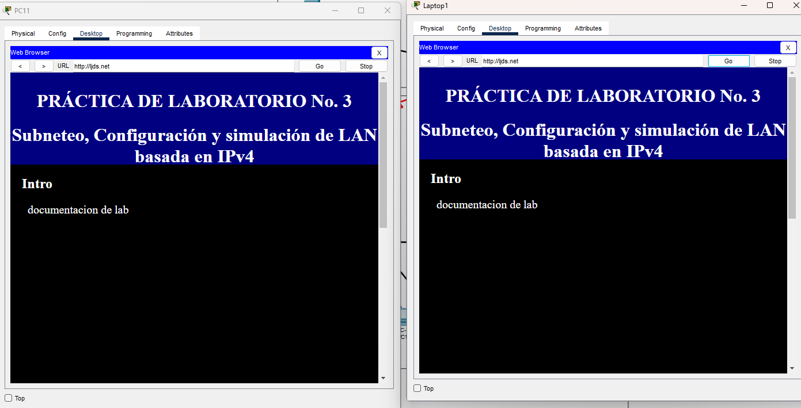

It is required to configure and implement the network topology shown in Figure 1. The topology must be able to satisfy the following minimum requirements:


1. Communication between users of the same VLAN in the "Campus" network. 2. Communication between users belonging to different VLANs in the "Campus" network.
3. Support PVRST (Per VLAN Rapid Spanning Tree) protocol and 802.1Q trunking on LANs. 4. Support RIPv2 routing on the required router interfaces.


5. The IP addresses of the network interfaces of the terminal nodes of the proposed network topology must be configured dynamically using the DHCP protocol, except for the interfaces of routers and servers, which are assigned manually. For WAN networks and links, an IPv4 addressing scheme must be formulated and developed taking into account the address spaces presented below: to. “Campus” network: 128.10+X.0.0/16. Consider the network information in Table 1, where VLANs 35, 20, and 50 require 950 clients each, while VLANs 99 and 55 require 254 clients each. b. WAN (serial link and Cloud): 11.130.2+X.0/24. c. Server LAN: 209.175.50+X.0/24. Consider that the LAN requires 30 clients. d. LAN of My “smart” home: 192.168.0+X.1/16. Consider that the LAN requires 254 clients.
6. All users, from all networks (i.e., “Campus”, My “smart” home), must have access to the personalized web page hosted on the Web Server. HTTP connections must be made from port 80 and the domain name will be managed by the DNS server. This name must have the following format: Initials_student_names.net (e.g., jmalk.net).
7. The terminal nodes, such as smartphones and laptops, must also have access to the graphic interface for managing the Internet of Things devices that are included in “My “Smart” Home”.
8. The PCs on the “Campus” network must run a client script based on TCP socket and connect to the socket-TCP server running on the Web Server. The script can be developed in the programming language of your choice and available in Cisco Packet Tracer (Hint. “Programming” tab).

1) Evaluate the bidirectional flow of data generated when accessing the page hosted on the Web server by the terminal nodes of the different networks that make up the topology of Figure 1, using the DNS service. Justify your analysis using captures with the Cisco Packet Tracer simulator and packet filters.
what i noticed that while both networks can access the webserver the way they recieve the pacakges from the webserver is diffrent as with the campus network it seems that the package flows in one straigh line kind of as it doenst veer of cource. while for the smart house of the devices connected wirelessly to the home gateway the gateway send the packet out to all devices connected to it instead of just going staight to it like in the campus
2) Evaluate the bidirectional flow of data generated when accessing from the terminal nodes, such as smartphones and laptops, belonging to the “Smart” Mi Casa LAN, to the graphical management interface of the Internet of Things devices that are included in Mi Casa "Intelligent". Justify your analysis using captures with the Cisco Packet Tracer simulator and packet filters.
for the iot devices here on the smart network what i observed is the same that i was in the pevious step where the home gateway sends out a data packet to all devices connected to the homegateway and from there it identifies which is the correct destination so it delivers the order once it does it resend a package of the updated state of the device so like if it was a door if i said to open it it will send back a package saying that it is open to the original sender
3) Evaluate the bidirectional flow of data generated by the PCs of the "Campus" network when executing the client script based on TCP socket and connecting with the socket-TCP server running on the Web Server. Justify your analysis using captures with the Cisco Packet Tracer simulator and packet filters.
what i was able to observe was that yes the pc was able to make contact with the webserver what i learned is that since i havent programmed a stop option the packets are contantly going and exchanging information and only when i stop either the client or server does it stop